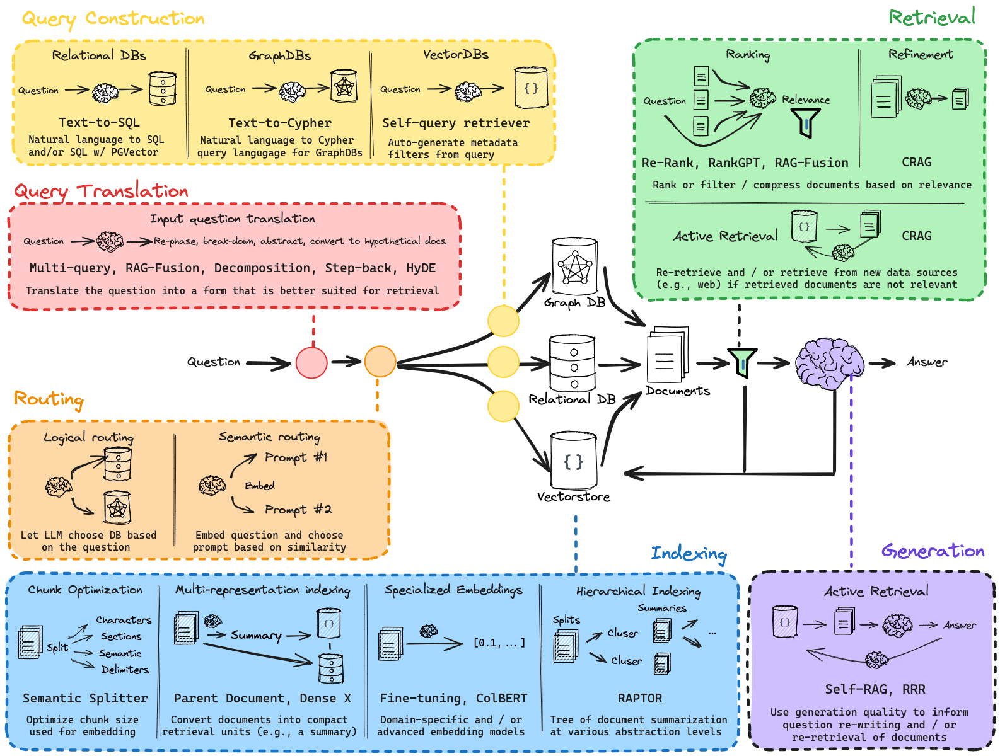
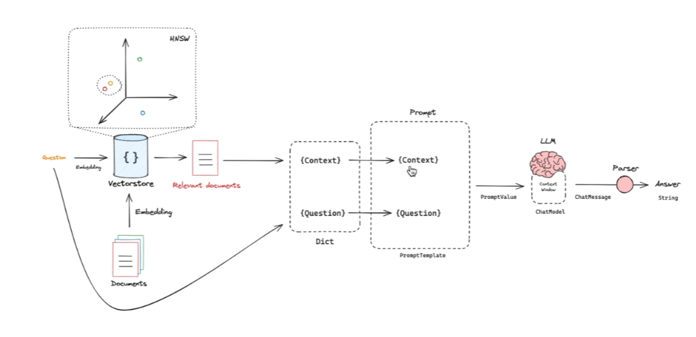
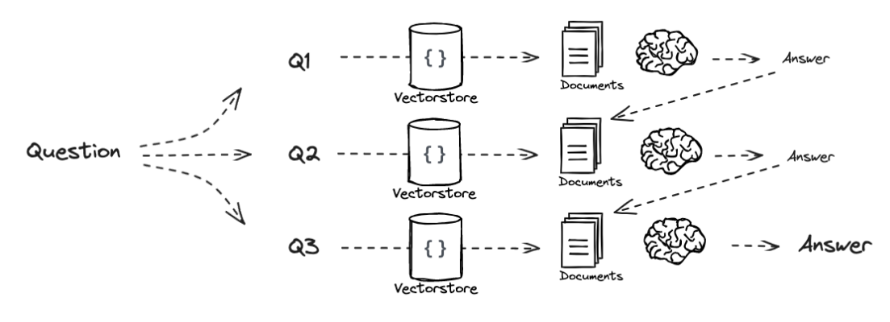
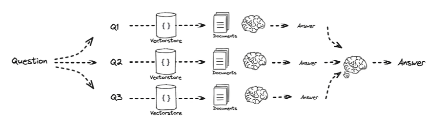
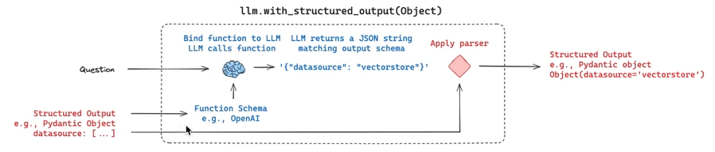
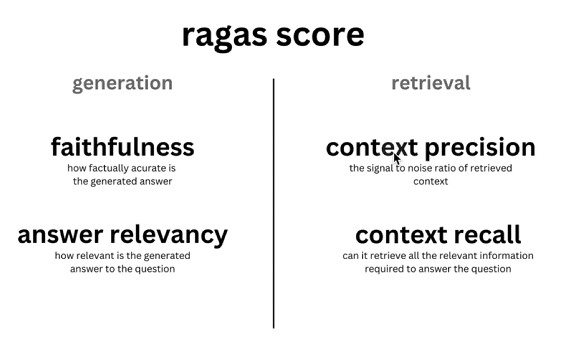

RAG 学习
基于该系列视频做的笔记。

Overview

最简单的 RAG 包含三个步骤：Indexing、Retrieval、Generation
Indexing
如何将数据转换为向量？
- 通过 Embedding Model 转换。维度空间越高，向量越精确。
如何对向量进行管理与检索？
- 使用向量数据库。
建立向量索引的算法
判断向量的相似度
- 根据对应 LLM 官方的推荐方法计算，例如 OpenAI 推荐余弦相似度计算。
Retrieval
检索出数据，将相关文本块套入提示词模板。
Generation
将提示词发送给 LLM 获取响应内容。
举例
将数据存入向量数据库
从向量数据库中检索数据
Query Translation
根本目的是为了提升相关文本块的命中率，希望能够检索到更多内容。
https://chatgpt.com/s/t_6865276fc3388191b2cf46301dc5845f
五种优化方式
Multi-query
多查询
基于原始问题，生成多个不同版本、不同视角的新问题。
RAG-Fusion
Multi-Query 的增强版，对检索结果进行重排序。
Decomposition
问题分解
将一个复杂的问题拆解为若干个子问题。子问题间可以是递进关系，也可以是独立关系。
递进关系

独立关系

Step-back
退一步思考
基于当前问题，问一个更基础的问题。
HyDE
Hypothetical Document Embeddings、假设性文档嵌入
基于原问题生成假想的文档内容，再根据假想的文档内容去 Retrieval 相关文本块。
Routing
Logical routing
并不是所有数据都适合基于向量存储语义化查询。对于结构良好的问题，传统的关系型数据库、图数据库等，查询效果显然更好。
例如“LangChain 在 2024 年之后发布的访谈视频”，结构良好。
所以需要判断原始问题更适合哪种查询方式。对于结构良好的问题，应当从关系型数据库中查询。对于结构不良的问题，从向量数据库中语义查询。
Semantic routing
例如，系统中有很多内置的提示词模板，需要根据问题选择合适的提示词模板。
如何选择提示词模板？
将提示词模板与问题转换为向量，对比问题与各个提示词模板间的相似度，选择相似度最高的模板。
Query Construction
这块知识与 Logical routing 衔接。
用户输入的是文本，但是不同数据库有不同的查询语言。
例如关系型数据库使用 SQL，图数据库使用 Cypher，向量数据库也有高阶的 metadata 用法。
如何将文本转换为对应的查询语言？
- 结构化输出（Structured Outputs）
如何实现？
- LLM 的 Function Call
- 提示词（没有前者稳定）
LangChain 中提供了结构化输出的专用方法：with_structure_output
with_structure_output 背后做了哪些事？

定义好数据格式（例如 Python 中的 Pydantic Object），将 Schema 传给 LLM Function Call，从而输出稳定的指定 Schema 的数据格式。
Indexing
Retrieval 前最重要的点：如何更好地将原始数据存储进数据库？
四种方式
Chunk Optimization
最简单的方式，根据语义化存储。
优化点：如何切片？ - 例如纯文本，按照段落；markdown，按照标题；代码块，按照特殊标识等等。
Multi-representation indexing
原始数据并不只有文本格式，还有图片、表格等格式。
为了解决该问题，LangChain 与 Unstructured 进行合作。
- Unstructured：是一个专为生成式 AI（GenAI）设计的企业级数据处理框架，核心功能是将复杂的非结构化数据转化为干净、结构化的数据。
例如用户传入一个 pdf，解析器先从 pdf 中将图片、表格、文本等数据分类提取出来。一方面存储到数据库中，另一方面通过大模型为数据生成文本概要，同时为二者建立映射。当 Retrieval 时，再将概要与对应数据提取出来，生成 AI 响应。

Sepcialized Embeddings
使用特定领域的 Embedding 模型。
Hierarchical Indexing
核心思路：原始有很多文档，对文档进行聚合，再聚合，直到只有一个文档。构建为一棵树（这个就与传统的索引有些类似了，打到一个节点，根据节点与其他节点的关联寻找其他数据信息）。将所有文档存储进向量数据库。
优点
- 增加了相关文本的命中率。（前面将原始问题拆分为多个问题相当于子弹变多，该优化相当于靶子变多。）
- 使 RAG 能够更好地做总结性内容。（之前的 RAG 更倾向于处理一个或多个文本段落中的具体问题，如果原始文本间关联度低，不适合做所有文本的知识总结。）

Retrieval
Ranking
重排序，对初次检索出的相关文档进行二次排序。
-
Re-Rank
- 使用专业的重排序模型进行重排序。
-
RankGPT
- 使用 GPT 模型进行重排序。
Active Retrieval
主动检索
最后检索出来的结果可能与原始问题并没有太大关系。
如果关联度过低，则使用 Web Search 增补相关文档。
Generation
Self-RAG
基于最后生成的结果进行打分，如果分数过低，反思哪里做的不好，基于结果再次触发检索，重新生成回答。
Other
如何做 RAG 的评估？
使用 Ragas 框架。
评估维度？
